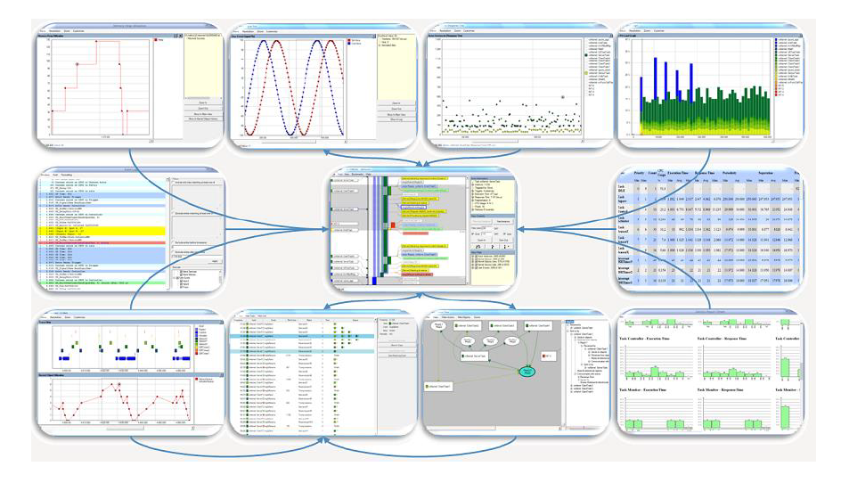
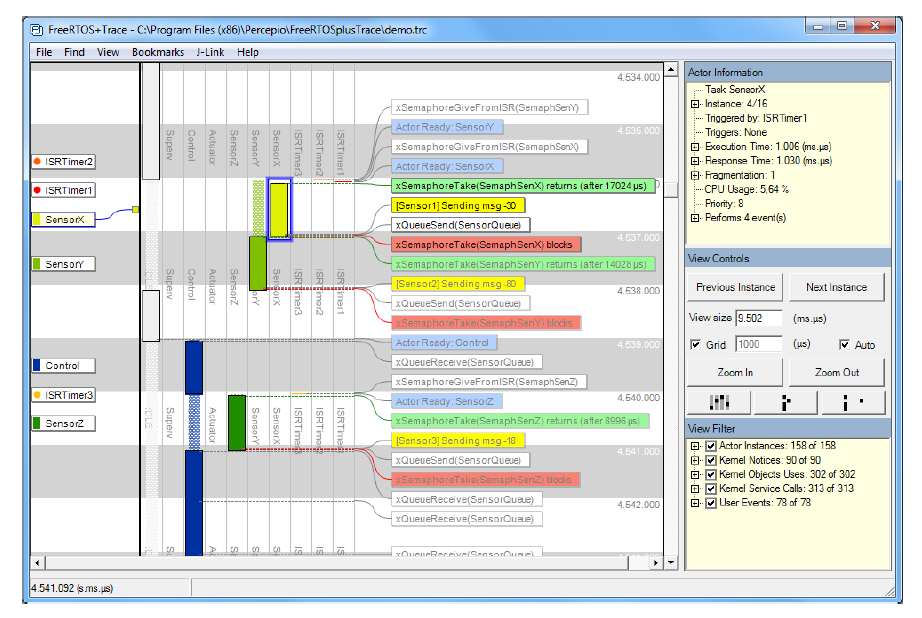
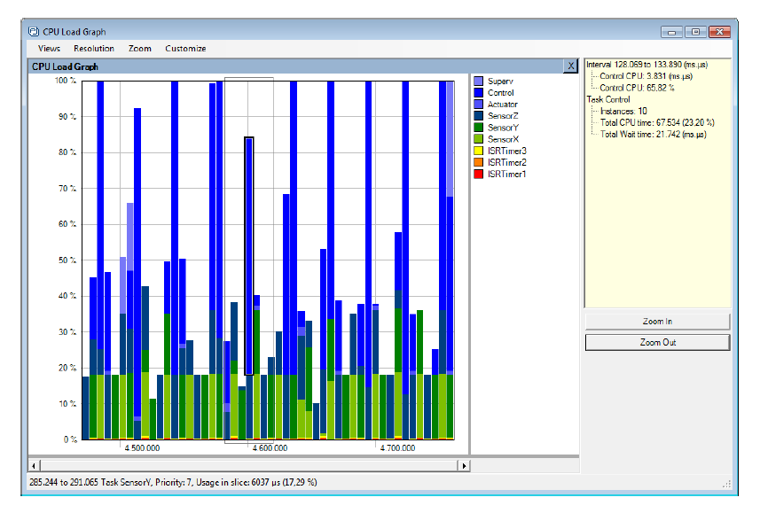
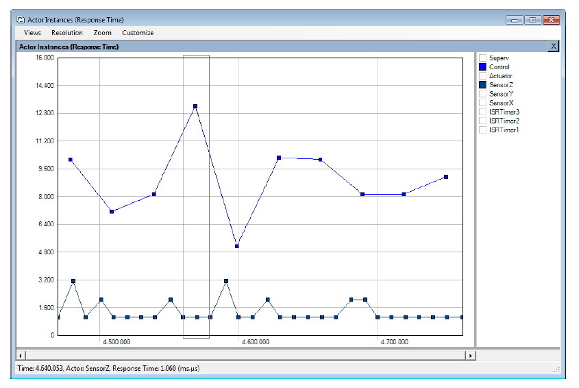
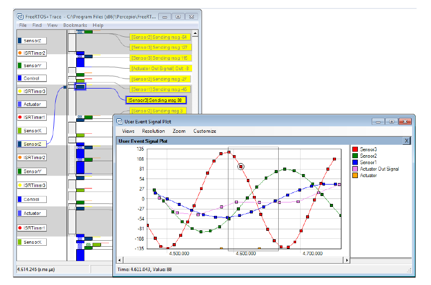
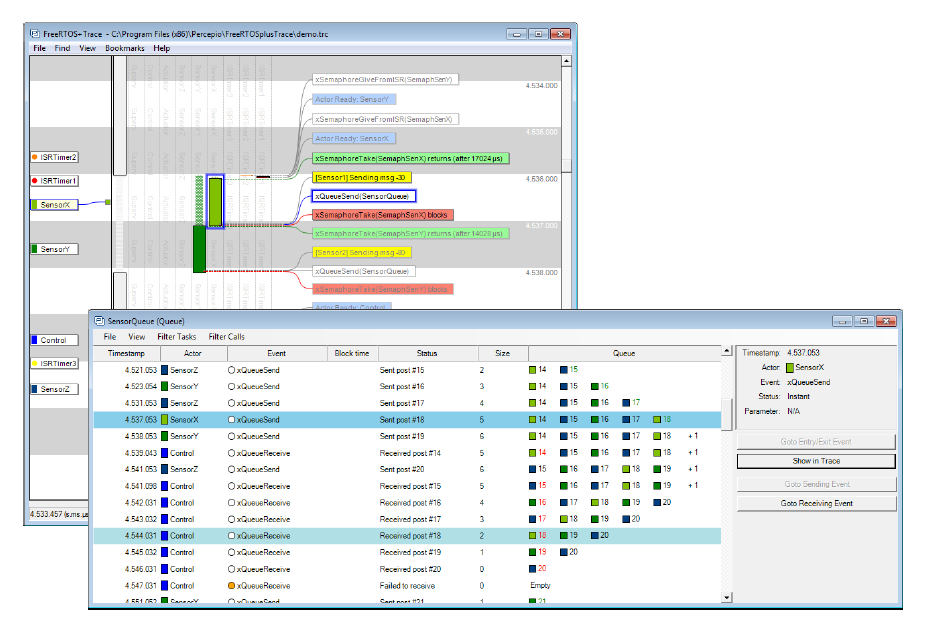
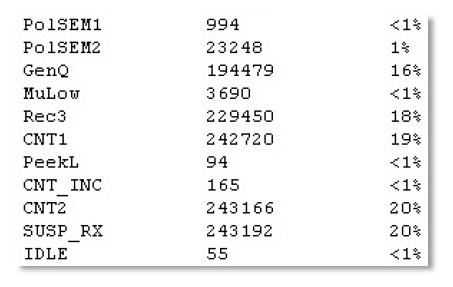
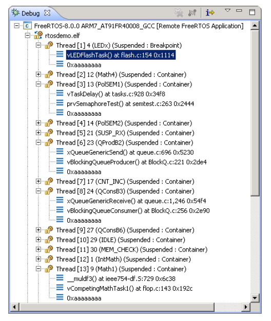

12 开发者支持
12.1 简介
本章重点介绍了一组旨在最大化开发效率的特性：
- 提供对应用行为的洞察。
- 突出优化机会。
- 在错误发生时立即捕获。
12.2 configASSERT()
在 C 语言中，宏 assert() 用于验证程序做出的“断言”（假设）。断言以 C 表达式形式书写，如果表达式结果为假（0），则断言失败。例如，清单 12.1 检查指针 pxMyPointer 是否不为 NULL。
/* 检查 pxMyPointer 是否不为 NULL */
assert( pxMyPointer != NULL );
清单 12.1 使用标准 C assert() 宏检查 pxMyPointer 是否为 NULL
应用开发者可通过实现 assert() 宏来指定断言失败时的处理方式。
FreeRTOS 源码不会调用 assert()，因为并非所有编译器都支持该宏。相反，FreeRTOS 源码中大量使用了 configASSERT() 宏，开发者可在 FreeRTOSConfig.h 中自定义其行为，功能与标准 C assert() 类似。
断言失败必须视为致命错误。不要尝试在断言失败的代码行之后继续执行。
使用
configASSERT()能显著提升开发效率，能立即捕获和定位许多常见错误。强烈建议在开发或调试 FreeRTOS 应用时定义configASSERT()。
定义 configASSERT() 有助于运行时调试，但会增加应用代码体积并降低执行速度。如果未定义 configASSERT()，则会使用默认的空定义，所有对 configASSERT() 的调用都会被 C 预处理器完全移除。
12.2.1 示例 configASSERT() 定义
清单 12.2 中的 configASSERT() 定义在应用程序在调试器控制下执行时非常有用。它将在任何断言失败的代码行中停止执行，因此当调试会话暂停时，调试器显示的将是失败断言的代码行。
/* 禁用中断以停止滴答中断的执行，然后进入循环以便不在断言失败的代码行之后继续执行。
如果硬件支持调试中断，则可以用调试中断指令替换 for() 循环。 */
#define configASSERT( x ) if( ( x ) == 0 ) { taskDISABLE_INTERRUPTS(); for(;;); }
清单 12.2 在调试器控制下执行时有用的简单 configASSERT() 定义
清单 12.3 中的 configASSERT() 定义在应用程序不在调试器控制下执行时非常有用。它会打印或以其他方式记录下断言失败的源代码行。失败的断言代码行通过标准 C __FILE__ 宏获取源文件名，通过标准 C __LINE__ 宏获取源文件中的行号。
/* 此函数必须在 C 源文件中定义，而不是 FreeRTOSConfig.h 头文件中。 */
void vAssertCalled( const char *pcFile, uint32_t ulLine )
{
/* 在此函数内部，pcFile 保存检测到错误的源文件名，
ulLine 保存源文件中的行号。可以在进入以下无限循环之前打印或以其他方式记录 pcFile 和 ulLine 的值。 */
RecordErrorInformationHere( pcFile, ulLine );
/* 禁用中断以停止滴答中断的执行，然后进入循环以便不在断言失败的代码行之后继续执行。 */
taskDISABLE_INTERRUPTS();
for( ;; );
}
/*-----------------------------------------------------------*/
/* 以下两行必须放在 FreeRTOSConfig.h 中。 */
extern void vAssertCalled( const char *pcFile, unsigned long ulLine );
#define configASSERT( x ) if( ( x ) == 0 ) vAssertCalled( __FILE__, __LINE__ )
清单 12.3 记录下断言失败的源代码行的 configASSERT() 定义
12.3 Tracealyzer for FreeRTOS
Tracealyzer for FreeRTOS 是我们的合作伙伴 Percepio 提供的运行时诊断和优化工具。
Tracealyzer for FreeRTOS 捕获有价值的动态行为信息，然后以相互关联的图形视图呈现捕获的信息。该工具还能够显示多个同步视图。
捕获的信息在分析、故障排除或简单地优化 FreeRTOS 应用程序时非常宝贵。
Tracealyzer for FreeRTOS 可以与传统调试器并行使用，并通过更高层次的基于时间的视角补充调试器的视图。

图 12.1 FreeRTOS+Trace 包含 20 多个相互关联的视图

图 12.2 FreeRTOS+Trace 主要跟踪视图 - 超过 20 个相互关联的跟踪视图之一

图 12.3 FreeRTOS+Trace CPU 占用率视图 - 超过 20 个相互关联的跟踪视图之一

图 12.4 FreeRTOS+Trace 响应时间视图 - 超过 20 个相互关联的跟踪视图之一

图 12.5 FreeRTOS+Trace 用户事件绘图视图 - 超过 20 个相互关联的跟踪视图之一

图 12.6 FreeRTOS+Trace 内核对象历史视图 - 超过 20 个相互关联的跟踪视图之一
12.4 调试相关的钩子（回调）函数
12.4.1 内存分配失败钩子
内存分配失败钩子（或回调）在第 3 章《堆内存管理》中进行了描述。
定义内存分配失败钩子可确保在创建任务、队列、信号量或事件组失败时立即通知应用开发者。
12.4.2 堆栈溢出钩子
堆栈溢出钩子的详细信息在第 13.3 节《堆栈溢出》中提供。
定义堆栈溢出钩子可确保在任务使用的堆栈超过分配给该任务的堆栈空间时通知应用开发者。
12.5 查看运行时和任务状态信息
12.5.1 任务运行时统计信息
任务运行时统计信息提供每个任务所接收处理时间的信息。任务的 运行时间 是自应用程序启动以来，任务处于运行状态的总时间。
运行时统计信息旨在作为项目开发阶段的分析和调试工具。它们提供的信息仅在用于运行时统计信息的计数器溢出之前有效。收集运行时统计信息会增加任务上下文切换时间。
要获取二进制运行时统计信息，调用 uxTaskGetSystemState() API 函数。要获取可读性较强的 ASCII 表格形式的运行时统计信息，调用 vTaskGetRunTimeStatistics() 帮助函数。
12.5.2 运行时统计时钟
运行时统计信息需要测量滴答周期的分数。因此，RTOS 滴答计数器不用于运行时统计时钟，而是由应用程序代码提供时钟。建议将运行时统计时钟的频率设置为滴答中断频率的 10 到 100 倍之间。运行时统计时钟的速度越快，统计信息就越准确，但时间值溢出的时间也越早。
理想情况下，时间值由一个自由运行的 32 位外设定时器/计数器生成，其值可以在没有其他处理开销的情况下读取。如果可用的外设和时钟速度不支持该技术，则可以使用替代但效率较低的技术，包括：
- 配置外设以在所需的运行时统计时钟频率下生成周期性中断，然后使用生成的中断数量作为运行时统计时钟。
如果周期性中断仅用于提供运行时统计时钟，则此方法效率非常低。然而，如果应用程序已经使用具有合适频率的周期性中断，则将生成的中断数量计入现有中断服务例程是简单而高效的。
- 通过使用自由运行的 16 位外设定时器的当前值作为 32 位值的最低有效 16 位，以及定时器溢出的次数作为 32 位值的最高有效 16 位，生成 32 位值。
通过将 RTOS 滴答计数器与 ARM Cortex-M SysTick 定时器的当前值结合起来，可以通过适当且有些复杂的操作生成运行时统计时钟。FreeRTOS 下载中的某些演示项目演示了如何实现这一点。
12.5.3 配置应用程序以收集运行时统计信息
以下是收集任务运行时统计信息所需的宏的详细信息。最初，这些宏旨在包含在 RTOS 移植层中，这就是宏前缀为“port”的原因，但在 FreeRTOSConfig.h 中定义它们已被证明更为实用。
用于收集运行时统计信息的宏
configGENERATE_RUN_TIME_STATS
此宏必须在 FreeRTOSConfig.h 中设置为 1。当此宏设置为 1 时，调度程序将在适当的时候调用本节详细介绍的其他宏。
portCONFIGURE_TIMER_FOR_RUN_TIME_STATS()
必须提供此宏以初始化用于提供运行时统计信息时钟的外设。
portGET_RUN_TIME_COUNTER_VALUE(), 或portALT_GET_RUN_TIME_COUNTER_VALUE(Time)
必须提供这两个宏中的一个以返回当前运行时统计信息时钟值。这是自应用程序首次启动以来，应用程序运行的总时间，以运行时统计信息时钟单位表示。
如果使用第一个宏，则必须将其定义为评估当前时钟值。如果使用第二个宏，则必须将其定义为将其“Time”参数设置为当前时钟值。
12.5.4 uxTaskGetSystemState() API 函数
uxTaskGetSystemState() 提供有关 FreeRTOS 调度程序控制下的每个任务的状态信息快照。信息以 TaskStatus_t 结构的数组形式提供，数组中每个索引对应一个任务。TaskStatus_t 在清单 12.5 中进行了描述。
UBaseType_t uxTaskGetSystemState( TaskStatus_t * const pxTaskStatusArray,
const UBaseType_t uxArraySize,
configRUN_TIME_COUNTER_TYPE * const pulTotalRunTime );
清单 12.4 uxTaskGetSystemState() API 函数原型
注意：
configRUN_TIME_COUNTER_TYPE默认值为uint32_t，以保持向后兼容性，但如果uint32_t限制太大，可以在 FreeRTOSConfig.h 中覆盖。
uxTaskGetSystemState() 参数和返回值
pxTaskStatusArray
指向 TaskStatus_t 结构数组的指针。
数组必须包含每个任务至少一个 TaskStatus_t 结构。可以使用 uxTaskGetNumberOfTasks() API 函数确定任务数量。
TaskStatus_t 结构在清单 12.5 中进行了描述，TaskStatus_t 结构成员在下一个列表中进行了描述。
uxArraySize
pxTaskStatusArray 参数所指向的数组的大小。大小以数组中的索引数量（数组中包含的 TaskStatus_t 结构的数量）而不是数组中的字节数来指定。
pulTotalRunTime
如果在 FreeRTOSConfig.h 中将 configGENERATE_RUN_TIME_STATS 设置为 1，则 *pulTotalRunTime 将由 uxTaskGetSystemState() 设置为自目标启动以来的总运行时间（由应用程序提供的运行时统计信息时钟定义）。
pulTotalRunTime 是可选的，如果不需要总运行时间，可以将其设置为 NULL。
- 返回值
uxTaskGetSystemState() 填充的 TaskStatus_t 结构的数量将被返回。
返回值应等于 uxTaskGetNumberOfTasks() API 函数返回的值，但如果传递给 uxArraySize 参数的值太小，则返回值将为零。
typedef struct xTASK_STATUS
{
TaskHandle_t xHandle;
const char *pcTaskName;
UBaseType_t xTaskNumber;
eTaskState eCurrentState;
UBaseType_t uxCurrentPriority;
UBaseType_t uxBasePriority;
configRUN_TIME_COUNTER_TYPE ulRunTimeCounter;
StackType_t * pxStackBase;
#if ( ( portSTACK_GROWTH > 0 ) || ( configRECORD_STACK_HIGH_ADDRESS == 1 ) )
StackType_t * pxTopOfStack;
StackType_t * pxEndOfStack;
#endif
uint16_t usStackHighWaterMark;
#if ( ( configUSE_CORE_AFFINITY == 1 ) && ( configNUMBER_OF_CORES > 1 ) )
UBaseType_t uxCoreAffinityMask;
#endif
} TaskStatus_t;
清单 12.5 TaskStatus_t 结构
TaskStatus_t 结构成员
xHandle
与结构中信息相关联的任务的句柄。
pcTaskName
任务的可读文本名称。
xTaskNumber
每个任务都有一个唯一的 xTaskNumber 值。
如果应用程序在运行时创建和删除任务，则可能会出现任务与先前删除的任务具有相同句柄的情况。提供 xTaskNumber 是为了允许应用程序代码和内核感知调试器区分仍有效的任务和具有相同句柄的已删除任务。
eCurrentState
一个枚举类型，表示任务的状态。eCurrentState 可以是以下值之一：
eRunningeReadyeBlockedeSuspendedeDeleted
任务仅在通过调用 vTaskDelete() 删除任务和空闲任务释放分配给已删除任务的内部数据结构和堆栈的内存之间的短时间内被报告为处于 eDeleted 状态。在此之后，任务将不再以任何方式存在，尝试使用其句柄是无效的。
uxCurrentPriority
uxTaskGetSystemState() 被调用时，任务正在运行的优先级。如果任务根据优先级继承机制临时被分配了更高的优先级，则 uxCurrentPriority 将高于应用程序开发者分配给任务的优先级，具体机制在 8.3 节 信号量（和二进制信号量） 中进行了描述。
uxBasePriority
应用程序开发者分配给任务的优先级。
uxBasePriority 仅在 FreeRTOSConfig.h 中将 configUSE_MUTEXES 设置为 1 时有效。
ulRunTimeCounter
自任务创建以来任务使用的总运行时间。总运行时间作为绝对时间提供，使用应用程序开发者提供的时钟来收集运行时统计信息。仅当 FreeRTOSConfig.h 中将 configGENERATE_RUN_TIME_STATS 设置为 1 时，ulRunTimeCounter 才有效。
pxStackBase
指向分配给该任务的堆栈区域的基地址。
pxTopOfStack
指向分配给该任务的堆栈区域的当前顶部地址。
pxTopOfStack 字段仅在堆栈向上生长（即 portSTACK_GROWTH 大于零）或在 FreeRTOSConfig.h 中将 configRECORD_STACK_HIGH_ADDRESS 设置为 1 时有效。
pxEndOfStack
指向分配给该任务的堆栈区域的结束地址。
pxEndOfStack 字段仅在堆栈向上生长（即 portSTACK_GROWTH 大于零）或在 FreeRTOSConfig.h 中将 configRECORD_STACK_HIGH_ADDRESS 设置为 1 时有效。
usStackHighWaterMark
任务的堆栈高水位标记。这是自任务创建以来，任务堆栈中剩余的最小空间量。它表示任务溢出堆栈的接近程度；该值越接近零，任务越接近溢出堆栈。usStackHighWaterMark 以字节为单位。
uxCoreAffinityMask
一个按位值，指示任务可以在其上运行的核心。
核心从 0 编号到 configNUMBER_OF_CORES - 1。例如，可以在核心 0 和核心 1 上运行的任务将其 uxCoreAffinityMask 设置为 0x03。uxCoreAffinityMask 字段仅在 FreeRTOSConfig.h 中将 configUSE_CORE_AFFINITY 设置为 1 且 configNUMBER_OF_CORES 设置为大于 1 时可用。
12.5.5 vTaskListTasks() 帮助函数
vTaskListTasks() 提供与 uxTaskGetSystemState() 类似的任务状态信息，但以人类可读的 ASCII 表格形式呈现信息，而不是以二进制值数组的形式。
vTaskListTasks() 是一个非常耗费处理器的函数，并且会使调度程序挂起较长时间。因此，建议仅在调试时使用该函数，而不要在生产实时系统中使用。
如果在 FreeRTOSConfig.h 中将 configUSE_TRACE_FACILITY 设置为 1 且将 configUSE_STATS_FORMATTING_FUNCTIONS 设置为大于 0，则可以使用 vTaskListTasks()。
void vTaskListTasks( char * pcWriteBuffer, size_t uxBufferLength );
清单 12.6 vTaskListTasks() API 函数原型
vTaskListTasks() 参数
pcWriteBuffer
指向一个字符缓冲区的指针，格式化的人类可读表将被写入该缓冲区。
该缓冲区假定足够大，可以容纳生成的报告。
每个任务大约 40 个字节应该足够。
uxBufferLength
pcWriteBuffer 的长度。
vTaskListTasks() 生成的输出示例见图 12.7。
在输出中：
-
每一行提供单个任务的信息。
-
第一列是任务的名称。
-
第二列是任务的状态，其中 'X' 表示正在运行，'R' 表示就绪，'B' 表示阻塞，'S' 表示挂起，'D' 表示任务已被删除。 任务仅在通过调用
vTaskDelete()删除任务和空闲任务释放分配给已删除任务的内部数据结构和堆栈的内存之间的短时间内被报告为处于删除状态。 在此之后，任务将不再以任何方式存在，尝试使用其句柄是无效的。 -
第三列是任务的优先级。
-
第四列是任务的堆栈高水位标记。请参见
usStackHighWaterMark的描述。 -
第五列是分配给任务的唯一编号。请参见
xTaskNumber的描述。

图 12.7 vTaskListTasks() 生成的输出示例
注意：
vTaskList是vTaskListTasks的旧版本。vTaskList假定pcWriteBuffer的长度为configSTATS_BUFFER_MAX_LENGTH。此函数仅用于向后兼容。 新应用程序建议使用vTaskListTasks并显式提供pcWriteBuffer的长度。
void vTaskList( signed char *pcWriteBuffer );
清单 12.7 vTaskList() API 函数原型
vTaskList() 参数
-
pcWriteBuffer指向一个字符缓冲区的指针，格式化的人类可读表将被写入该缓冲区。 该缓冲区必须足够大，以容纳整个表，因为不执行边界检查。
12.5.6 vTaskGetRunTimeStatistics() 帮助函数
vTaskGetRunTimeStatistics() 将收集的运行时统计信息格式化为人类可读的 ASCII 表格。
vTaskGetRunTimeStatistics() 是一个非常耗费处理器的函数，并且会使调度程序挂起较长时间。因此，建议仅在调试时使用该函数，而不要在生产实时系统中使用。
当 FreeRTOSConfig.h 中将 configGENERATE_RUN_TIME_STATS 设置为 1，configUSE_STATS_FORMATTING_FUNCTIONS 设置为大于 0，且 configUSE_TRACE_FACILITY 设置为 1 时，vTaskGetRunTimeStatistics() 可用。
void vTaskGetRunTimeStatistics( char * pcWriteBuffer, size_t uxBufferLength );
清单 12.8 vTaskGetRunTimeStatistics() API 函数原型
vTaskGetRunTimeStatistics() 参数
pcWriteBuffer
指向一个字符缓冲区的指针，格式化的人类可读表将被写入该缓冲区。
该缓冲区假定足够大，可以容纳生成的报告。
每个任务大约 40 个字节应该足够。
uxBufferLength
pcWriteBuffer 的长度。
vTaskGetRunTimeStatistics() 生成的输出示例见图 12.8。在输出中：
-
每一行提供单个任务的信息。
-
第一列是任务名称。
-
第二列是任务在运行状态下的时间，作为绝对值。请参见
ulRunTimeCounter的描述。 -
第三列是任务在运行状态下的时间，作为自目标启动以来的总时间百分比。显示的百分比总和通常会低于预期的 100%，因为统计信息是使用向下舍入到最接近整数值的整数计算的。

图 12.8 vTaskGetRunTimeStatistics() 生成的输出示例
注意：
vTaskGetRunTimeStats是vTaskGetRunTimeStatistics的旧版本。vTaskGetRunTimeStats假定pcWriteBuffer的长度为configSTATS_BUFFER_MAX_LENGTH。此函数仅用于向后兼容。 新应用程序建议使用vTaskGetRunTimeStatistics并显式提供pcWriteBuffer的长度。
c
void vTaskGetRunTimeStats( signed char *pcWriteBuffer );
清单 12.9 vTaskGetRunTimeStats() API 函数原型
vTaskGetRunTimeStats() 参数
-
pcWriteBuffer指向一个字符缓冲区的指针，格式化的人类可读表将被写入该缓冲区。该缓冲区必须足够大，以容纳整个表，因为不执行边界检查。
12.5.7 生成和显示运行时统计信息的示例
此示例使用假设的 16 位定时器生成 32 位运行时统计信息时钟。计数器配置为在 16 位值达到其最大值时生成中断——有效地创建溢出中断。中断服务例程计算溢出发生的次数。
通过将溢出发生的计数用作 32 位值的高两个字节，将当前 16 位计数器值用作 32 位值的低两个字节，生成 32 位值。清单 12.10 中显示了中断服务例程的伪代码。
void TimerOverflowInterruptHandler( void )
{
/* 仅计算中断的数量。 */
ulOverflowCount++;
/* 清除中断。 */
ClearTimerInterrupt();
}
清单 12.10 用于计算定时器溢出的 16 位定时器溢出中断处理程序
清单 12.11 显示了为启用运行时统计信息收集而添加到 FreeRTOSConfig.h 中的行。
/* 将 configGENERATE_RUN_TIME_STATS 设置为 1 以启用运行时统计信息的收集。
当这样做时，还必须定义 portCONFIGURE_TIMER_FOR_RUN_TIME_STATS() 和
portGET_RUN_TIME_COUNTER_VALUE() 或
portALT_GET_RUN_TIME_COUNTER_VALUE(x)。 */
#define configGENERATE_RUN_TIME_STATS 1
/* portCONFIGURE_TIMER_FOR_RUN_TIME_STATS() 被定义为调用设置假设的 16 位定时器的函数
（该函数的实现未显示）。 */
void vSetupTimerForRunTimeStats( void );
#define portCONFIGURE_TIMER_FOR_RUN_TIME_STATS() vSetupTimerForRunTimeStats()
/* portALT_GET_RUN_TIME_COUNTER_VALUE() 被定义为将其参数设置为当前运行时计数器/时间值。
返回的时间值为 32 位长，通过将 16 位定时器溢出的计数左移到 32 位数字的高两个字节，然后将结果与当前 16 位计数器值进行按位或运算而形成。 */
#define portALT_GET_RUN_TIME_COUNTER_VALUE( ulCountValue ) \
{ \
extern volatile unsigned long ulOverflowCount; \
\
/* 在使用其值时，断开时钟与计数器的连接，以免其值发生变化。 */ \
PauseTimer(); \
\
/* 溢出的次数被移位到返回的 32 位值的最高两个字节。 */ \
ulCountValue = ( ulOverflowCount << 16UL ); \
\
/* 当前计数器值用作返回的 32 位值的最低两个字节。 */ \
ulCountValue |= ( unsigned long ) ReadTimerCount(); \
\
/* 重新连接时钟到计数器。 */ \
ResumeTimer(); \
}
清单 12.11 为启用运行时统计信息收集而添加到 FreeRTOSConfig.h中的宏
清单 12.12 中的任务每 5 秒打印一次收集到的运行时统计信息。
#define RUN_TIME_STATS_STRING_BUFFER_LENGTH 512
/* 为了清晰起见，未在此代码清单中省略 fflush() 的调用。 */
static void prvStatsTask( void *pvParameters )
{
TickType_t xLastExecutionTime;
/* 用于保存格式化的运行时统计信息文本的缓冲区需要相当大。
因此将其声明为静态，以确保它不分配在任务堆栈上。这使得此函数不可重入。 */
static signed char cStringBuffer[ RUN_TIME_STATS_STRING_BUFFER_LENGTH ];
/* 该任务每 5 秒运行一次。 */
const TickType_t xBlockPeriod = pdMS_TO_TICKS( 5000 );
/* 将 xLastExecutionTime 初始化为当前时间。这是唯一需要显式写入此变量的时间。之后，它会在 vTaskDelayUntil() API 函数内部自动更新。 */
xLastExecutionTime = xTaskGetTickCount();
/* 与大多数任务一样，该任务在无限循环中实现。 */
for( ;; )
{
/* 等待，直到该任务再次运行。 */
xTaskDelayUntil( &xLastExecutionTime, xBlockPeriod );
/* 从运行时统计信息生成文本表。此表必须适合 cStringBuffer 数组。 */
vTaskGetRunTimeStatistics( cStringBuffer, RUN_TIME_STATS_STRING_BUFFER_LENGTH );
/* 打印运行时统计信息表的列标题。 */
printf( "\nTask\t\tAbs\t\t\t%%\n" );
printf( "-------------------------------------------------------------\n" );
/* 打印运行时统计信息表本身。数据表包含多行，因此调用 vPrintMultipleLines() 函数而不是直接调用 printf()。
vPrintMultipleLines() 函数逐行调用 printf()，以确保行缓冲区按预期工作。 */
vPrintMultipleLines( cStringBuffer );
}
}
清单 12.12 打印收集到的运行时统计信息的任务
12.6 跟踪钩子宏
跟踪宏是在 FreeRTOS 源代码中的关键点放置的宏。默认情况下，这些宏是空的，因此不会生成任何代码，也没有运行时开销。通过覆盖默认的空实现，应用程序开发者可以：
-
在不修改 FreeRTOS 源代码的情况下向 FreeRTOS 插入代码。
-
通过目标硬件上可用的任何方式输出详细的执行序列信息。跟踪宏出现在 FreeRTOS 源代码中的足够多的位置，允许它们用于创建完整详细的调度程序活动跟踪和分析日志。
12.6.1 可用的跟踪钩子宏
详细说明每个宏会占用太多空间。下面的列表详细说明了被认为对应用程序开发者最有用的宏的子集。
列表中的许多描述都提到了一个名为 pxCurrentTCB 的变量。 pxCurrentTCB 是一个 FreeRTOS 私有变量，保存处于运行状态的任务的句柄，并且可以在从 FreeRTOS/Source/tasks.c 源文件调用的任何宏中使用。
常用跟踪钩子宏的选择
traceTASK_INCREMENT_TICK(xTickCount)
在滴答中断期间调用，在滴答计数器递增之前。 xTickCount 参数将新滴答计数值传递给宏。
traceTASK_SWITCHED_OUT()
在选择新任务运行之前调用。在此时，pxCurrentTCB 包含即将离开运行状态的任务的句柄。
traceTASK_SWITCHED_IN()
在选择任务运行之后调用。在此时，pxCurrentTCB 包含即将进入运行状态的任务的句柄。
traceBLOCKING_ON_QUEUE_RECEIVE(pxQueue)
在当前执行的任务因尝试从空队列读取而进入阻塞状态之前立即调用，或因尝试“获取”空信号量或互斥量而进入阻塞状态。 pxQueue 参数将目标队列或信号量的句柄传递给宏。
traceBLOCKING_ON_QUEUE_SEND(pxQueue)
在当前执行的任务因尝试向已满队列写入而进入阻塞状态之前立即调用。 pxQueue 参数将目标队列的句柄传递给宏。
traceQUEUE_SEND(pxQueue)
当队列发送或信号量“给予”操作成功时，从 xQueueSend()、xQueueSendToFront()、xQueueSendToBack() 或任何信号量“给予”函数内部调用。 pxQueue 参数将目标队列或信号量的句柄传递给宏。
traceQUEUE_SEND_FAILED(pxQueue)
当队列发送或信号量“给予”操作失败时，从 xQueueSend()、xQueueSendToFront()、xQueueSendToBack() 或任何信号量“给予”函数内部调用。如果队列已满并且在指定的任何阻塞时间内仍然满，则队列发送或信号量“给予”将失败。 pxQueue 参数将目标队列或信号量的句柄传递给宏。
traceQUEUE_RECEIVE(pxQueue)
当队列接收或信号量“获取”操作成功时，从 xQueueReceive() 或任何信号量“获取”函数内部调用。 pxQueue 参数将目标队列或信号量的句柄传递给宏。
traceQUEUE_RECEIVE_FAILED(pxQueue)
当队列或信号量接收操作失败时，从 xQueueReceive() 或任何信号量“获取”函数内部调用。如果队列或信号量为空并且在指定的任何阻塞时间内仍然为空，则队列接收或信号量“获取”操作将失败。 pxQueue 参数将目标队列或信号量的句柄传递给宏。
traceQUEUE_SEND_FROM_ISR(pxQueue)
当发送操作成功时，从 xQueueSendFromISR() 内部调用。 pxQueue 参数将目标队列的句柄传递给宏。
traceQUEUE_SEND_FROM_ISR_FAILED(pxQueue)
当发送操作失败时，从 xQueueSendFromISR() 内部调用。如果队列已满，则发送操作将失败。 pxQueue 参数将目标队列的句柄传递给宏。
traceQUEUE_RECEIVE_FROM_ISR(pxQueue)
当接收操作成功时，从 xQueueReceiveFromISR() 内部调用。 pxQueue 参数将目标队列的句柄传递给宏。
traceQUEUE_RECEIVE_FROM_ISR_FAILED(pxQueue)
当接收操作因队列已空而失败时，从 xQueueReceiveFromISR() 内部调用。 pxQueue 参数将目标队列的句柄传递给宏。
traceTASK_DELAY_UNTIL( xTimeToWake )
当任务进入阻塞状态时，立即从 xTaskDelayUntil() 内部调用。
traceTASK_DELAY()
当任务进入阻塞状态时，立即从 vTaskDelay() 内部调用。
12.6.2 定义跟踪钩子宏
每个跟踪宏都有默认的空定义。可以通过在 FreeRTOSConfig.h 中提供新的宏定义来覆盖默认定义。如果跟踪宏定义变得很长或很复杂，则可以在一个新的头文件中实现它们，然后再从 FreeRTOSConfig.h 中包含该文件。
根据软件工程的最佳实践，FreeRTOS 维护严格的数据隐藏策略。跟踪宏允许将用户代码添加到 FreeRTOS 源文件中，因此跟踪宏可见的数据类型与应用程序代码可见的数据类型不同：
-
在 FreeRTOS/Source/tasks.c 源文件内部，任务句柄是指向描述任务的数据结构（任务的 任务控制块，或 TCB）的指针。在 FreeRTOS/Source/tasks.c 源文件外部，任务句柄是指向无效数据的指针。
-
在 FreeRTOS/Source/queue.c 源文件内部，队列句柄是指向描述队列的数据结构的指针。在 FreeRTOS/Source/queue.c 源文件外部，队列句柄是指向无效数据的指针。
如果跟踪宏直接访问通常是私有的 FreeRTOS 数据结构，则需要极其小心，因为私有数据结构可能会在 FreeRTOS 版本之间发生变化。
12.6.3 FreeRTOS 感知调试器插件
提供一些 FreeRTOS 感知的插件可用于以下 IDE。这份清单可能并不详尽：

-
Eclipse (StateViewer)
-
Eclipse (ThreadSpy)
-
IAR
-
ARM DS-5
-
Atollic TrueStudio
-
Microchip MPLAB
-
iSYSTEM WinIDEA
-
STM32CubeIDE